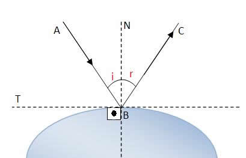
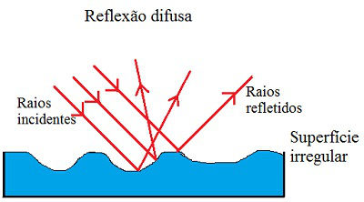
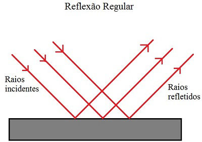

Sumário
Reflexão da Luz
A reflexão de luz consiste em um fenômeno óptico onde a incidência de luz em, uma superfície ou objeto, na qual o raio de luz volta ao meio de origem. Graças a esse fenômeno conseguimos enxergar os objetos à nossa volta.Podemos exemplificar a reflexão de luz da seguinte forma:

Reflexão da Luz - Link da imagem
Na imagem temos os seguintes Elementos da Reflexão que são classficados dessa forma:
AB = raio de luz incidente
BC = raio de luz refletido
N = reta normal à superfície no ponto b
T = reta tangente à superfície no ponto b
i = ângulo de incidência, formado entre o raio incidente e a reta normal
r = ângulo refletido, formado entre o raio refletido e a reta normal
A reflexão pode ser classificada de duas formas:
-
Difusa: Quando os raios de luz incidem em uma superfície irregular e
são refletidos em direções diversas. Como podemos ver na imagem abaixo:

Gráfico da reflexão difusa da luz
-
Regular: Quandos os raios de luz encontram uma superfície lisa e
são refletidas paralelos uns aos outros, na mesma direção. Visto na imagem abaixo:

Gráfico da reflexão regular da luz
Leis da Reflexão
Além disso, existem duas leis da reflexão, que
são efeitos que acontecem indiferente de ser uma reflexão difusa ou regular.
- Primeira lei da reflexão: O raio incidente, o refletido e a reta normal estão sempre no mesmo plano
- Segunda lei da reflexão: O ângulo de incidência é igual ao ângulo de reflexão, ou seja, pode ser representada pela fórmula i = r
RESUMÃO
Chegou a hora de fazer o Resumão! Para isso, aqui vão algumas dicas para você fazer o seu de forma completa e saber tudo sobre a Reflexão da Luz:
- Um bom jeito de você saber sobre a reflexão difusa e regular, a difusa acontece porque a superfície onde os raios batem é irregular, então eles se separam e refletem em direções confusas.
- Reflexão Regular como o nome já diz, é regular, uma superfície plana e raios refletidos reto e de maneira organizada.
- Para a primeira lei, você precisa lembrar que os raios e a Normal devem estar no mesmo plano, ou seja, no mesmo lado da superfície. Bem simples.
- A segunda lei é mais simples ainda, o ângulo dos raios é igual. Basta lembrar isso.
Refêrencias